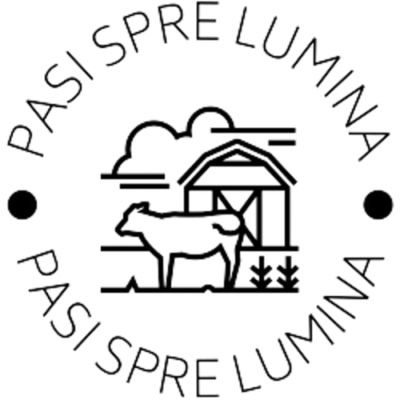

Toate lucrurile mari
Au fost la inceput mici

Bine ati venit la "Pasi spre lumina", o organizație non-profit dedicată ajutorării copiilor și adulților din comunitatea noastră. Misiunea noastră este de a oferi suport și resurse pentru a îmbunătăți viața acestora. Printre programele noastre se numără ridicarea nivelului social, spiritual, și emotional, care oferă educație, îngrijire medicală și sprijin emoțional pentru cei aflați în nevoie. Dumneavoastră puteți fi parte a acestui efort prin voluntariat sau prin donații. Fiecare contribuție, fie ea mare sau mică, ne ajută să îndeplinim misiunea noastră. Alăturați-vă echipei noastre în lupta pentru o lume mai bună pentru copii și adulții din comunitatea noastră.
Inceputul
Prima cladire
Lucrarea cu copii
Lucrarea cu adultii
Ferma
Serele cu legume
Moara
Utilajele
Biserica noua
În anul 2006, doi oameni dedicați (Deleu tatiana si Deleu Costel Eduard) au început să lucreze împreună pentru a face o schimbare pozitivă în comunitatea noastră. Aceștia au identificat nevoia acută de sprijin pentru copiii și adulții din zonă și au decis să acționeze. Astfel a luat naștere Pasi spre Lumina, o organizație non-profit dedicată ajutorării acestora. Încă de la început, am fost determinați să oferim suport și resurse pentru a îmbunătăți viața acestora și să le oferim oportunități pentru un viitor mai luminos. De-a lungul anilor, am dezvoltat programe și parteneriate puternice pentru a ne îndeplini misiunea și am crescut într-o organizație puternică și dedicată. În fiecare zi, ne angajăm să facem o diferență reală în viețile copiilor și adulților din comunitatea noastră.
În anul [data construirii primei clădiri], Pasi spre lumina a început un proiect ambițios de a construi prima sa clădire dedicată sprijinirii copiilor și adulților din comunitatea noastră. Această clădire a reprezentat un pas important în direcția noastră de a oferi resurse și suport cât mai eficient posibil. Clădirea noastră a oferit un spațiu dedicat pentru programele noastre, inclusiv adunare cu copii, adultii, și a permis extinderea acestora. De asemenea, a oferit un spațiu de întâlnire pentru voluntari și donatori și a devenit un centru al comunității pentru a oferi ajutor și speranță. Clădirea noastră a fost construită prin contribuțiile generoase ale comunității și prin munca voluntară a membrilor dedicați. Suntem recunoscători pentru toate aceste contribuții și pentru susținerea pe care am primit-o în decursul anilor. Clădirea noastră este mai mult decât un spațiu fizic, este simbolul dedicării și angajamentului nostru de a face o diferență reală în viețile copiilor și adulților din comunitatea noastră.
Ne concentrăm eforturile asupra sprijinirii copiilor din comunitatea noastră prin intermediul educației religioase. Înțelegem că valorile și credințele spirituale sunt esențiale pentru formarea unui caracter puternic și a unei personalități responsabile. În plus, oferim oportunități pentru copii de a învăța și de a se dezvolta prin intermediul activităților religioase, cum ar fi tabere, intalniri, și vizite acasa. Aceste activități îi ajută pe copii să-și dezvolte abilitățile, să-și îmbogățească cunoștințele religioase și să învețe valori importante, cum ar fi compasiunea, responsabilitatea și respectul. Suntem recunoscători pentru susținerea pe care am primit-o de la comunitatea noastră în sprijinirea copiilor din zona noastră prin intermediul educației religioase. Împreună, putem face o diferență reală în viețile acestor copii și îi putem ajuta să devină lideri spirituali și responsabili ai viitorului."

Pasi spre lumina, înțelege că adultii din comunitatea noastră au nevoie de sprijin nu numai din punct de vedere financiar, ci și din punct de vedere spiritual și social. De aceea, ne concentrăm eforturile asupra sprijinirii acestora prin intermediul unor programe care se concentrează pe educatia religioasa si sociala. În plus, ne dorim să oferim oportunități de muncă pentru adulții din comunitatea noastră. Programul nostru oferă posibilitatea adultilor de a lucra cu noi, îmbunătățind astfel abilitățile lor profesionale și finanțând în același timp organizația noastră. Suntem recunoscători pentru susținerea pe care am primit-o de la comunitatea noastră în sprijinirea adultilor din zona noastră prin intermediul programelor noastre de sprijin spiritual, religios și social, precum și a oportunităților de muncă. Împreună, putem face o diferență reală în viețile acestor adulți și îi putem ajuta să-și îmbunătățească calitatea vieții.


Suntem dedicați să oferim un sprijin durabil și sustenabil comunității noastre. De aceea, am început ferma noastră care se concentrează pe creșterea animalelor și pe energia verde. Ferma noastră cuprinde o varietate de animale, inclusiv porci, păsări, vaci, iepuri. Îngrijirea acestor animale este un aspect important al activităților noastre, iar produsele lor sunt utilizate în scopul susținerii financiare a organizației noastre. De asemenea, ferma noastră utilizează tehnologia solare pentru a genera energie verde, contribuind astfel la protejarea mediului și la reducerea emisiilor de gaze cu efect de seră. Suntem mândri de ferma noastră și de modul în care aceasta ajută la susținerea comunității noastre prin intermediul produselor de înaltă calitate pe care le oferim, precum și prin intermediul tehnologiei solare. Continuăm să investim în acest aspect al activităților noastre, în scopul de a oferi un viitor mai sustenabil pentru toți.


Suntem dedicați să oferim un sprijin durabil și sustenabil comunității noastre. De aceea, am adăugat creșterea legumelor în seră la activitățile noastre. Sera noastră de legume oferă o varietate de culturi, inclusiv roșii, castraveți, ardei, și multe altele. Acestea sunt cultivate cu atenție, folosind tehnici moderne și ecologice, astfel încât să putem oferi legume proaspete și sănătoase comunității noastre. Creșterea legumelor în seră ne permite să avem acces la legume proaspete pe tot parcursul anului și să contribuim la reducerea emisiilor de gaze cu efect de seră prin evitarea transportului lung al produselor. De asemenea, acesta este un mod excelent de a îmbunătăți calitatea vieții oamenilor din comunitate prin intermediul unei alimentații sănătoase. Suntem mândri de sera noastră de legume și de modul în care aceasta contribuie la susținerea comunității noastre prin intermediul alimentației sănătoase pe care o oferim. Continuăm să investim în această activitate, în scopul de a oferi un viitor mai sustenabil pentru toți.

Suntem dedicați să oferim un sprijin durabil comunității noastre. De aceea, am inclus în activitățile noastre și o moară de cereale. Aceasta moară de cereale este unica în această comunitate și ne permite să procesăm cerealele cultivate local, astfel încât să putem oferi produse de calitate comunității noastre. Prin intermediul acestei mori de cereale, ne propunem să susținem producătorii locali de cereale și să oferim o sursă de venit suplimentar acestora prin intermediul vânzării produselor obținute. De asemenea, aceasta ne permite să contribuim la economia locală și să oferim produse de calitate la prețuri accesibile pentru membrii comunității noastre. Suntem mândri de moara noastră de cereale și de modul în care aceasta contribuie la susținerea producătorilor locali și la îmbunătățirea economiei acestei comunități. Continuăm să investim în această activitate, în scopul de a oferi un viitor mai sustenabil pentru toți.
Acest sprijin se materializează și prin intermediul utilajelor pe care le deținem și pe care le pune la dispoziția comunității. Avem un parc de utilaje moderne, care ne permite să efectuăm diverse activități, de la agricultură și până la procesarea produselor alimentare. Utilajele noastre sunt de cea mai bună calitate și sunt întreținute regulat, astfel încât să ofere o performanță optimă. Principalul nostru obiectiv este să punem aceste utilaje la dispoziția comunității, astfel încât aceasta să se poată bucura de toate beneficantajele pe care le oferă. Utilajele noastre sunt disponibile pentru membrii comunității noastre, care pot să le folosească pentru a-și îmbunătăți activitățile agricole sau pentru a efectua alte activități economice. Prin intermediul acestor utilaje, suntem în măsură să oferim un sprijin real comunității noastre și să contribuim la îmbunătățirea economiei locale. Continuăm să investim în acest domeniu, în scopul de a oferi un viitor mai sustenabil pentru toți.

Ne-am angajat să oferim un suport durabil comunității noastre, atât din punct de vedere spiritual, cât și material. Din acest motiv, am construit o nouă biserică, care va servi drept loc de întâlnire și rugăciune pentru membrii comunității noastre. Această biserică a fost construită cu sprijinul unui finanțator dedicat, care a înțeles importanța acestui proiect și a dorit să contribuie la dezvoltarea comunității noastre. Biserica este dotată cu cele mai moderne facilități și este construită astfel încât să ofere un spațiu confortabil și primitor pentru toți cei care o vizitează. Această biserică va fi locul unde membrii comunității noastre se vor putea întâlni pentru a se ruga și a se bucura de prezența lui Dumnezeu. Ea va fi un simbol al angajamentului nostru față de comunitatea noastră și va reprezenta un loc special pentru generațiile viitoare. Suntem foarte bucuroși să oferim această biserică comunității noastre și sperăm că va fi un loc unde oamenii se vor putea bucura de pacea și harul lui Dumnezeu.

© 2023 by Gen Graphic. All rights rezerved to Pasi spre lumina